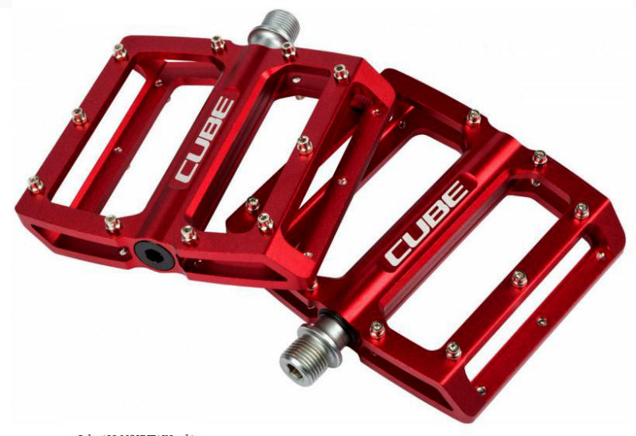
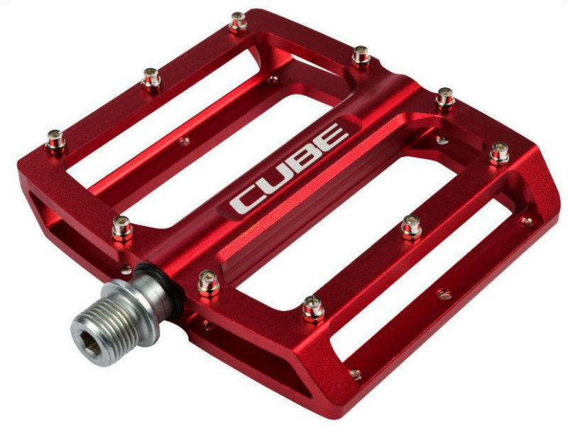

Зручний профіль педалей для хорошого зчеплення з ногами, змінні шипи, і багато іншого-все це гідності алюмінієвих педалей Cube ALL MOUNTAIN red
| 2880грн. |
Характеристики й опис
| Виробник - Cube |
| Діаметр осі - новий стандарт |
| Призначення - МТВ |
| Вага - 360г |
| Тип педалей - платформи |
| Для кого - унісекс |
| Вік - для дорослої людини |
| Підшипники - промишлені |
| Матеріал - алюміній |